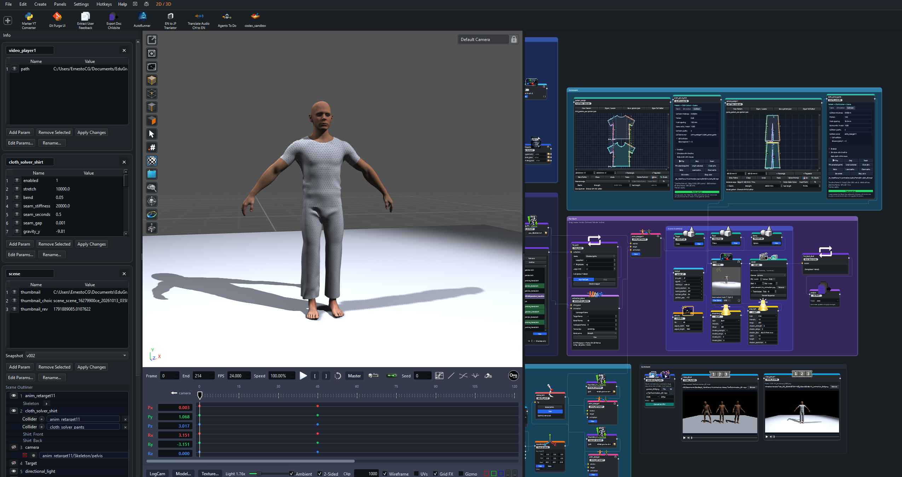
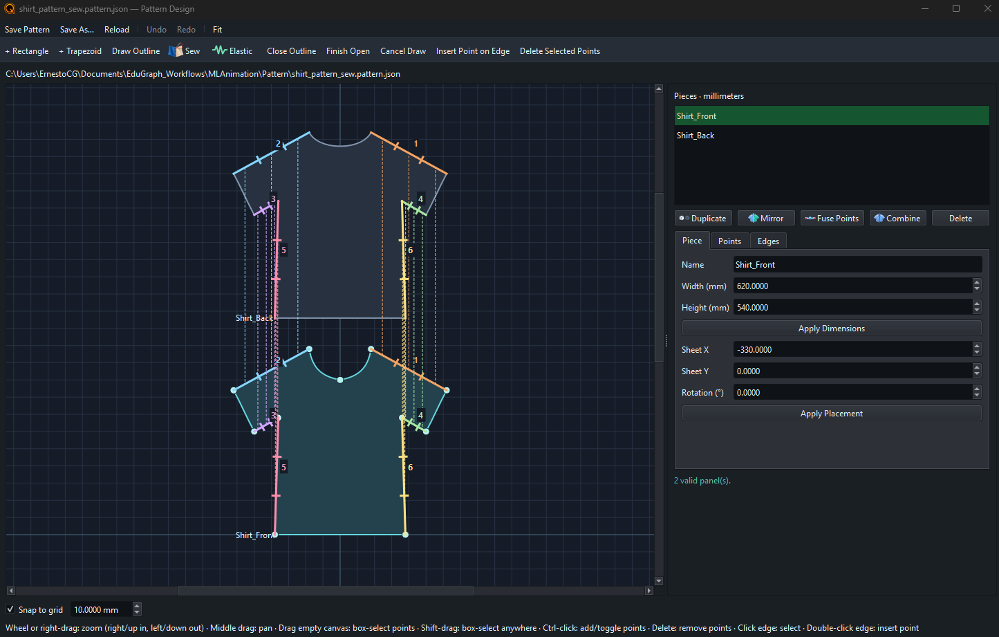

Continue from a settled pose
Save state stores the cloth pose, velocity, and sewing progress. Use Load cache to restore it and continue at the current timeline frame.
Use this when you want to reuse a draped garment before trying another animation.
Create · Simulate · Reuse
Pattern Design and Cloth Solver connect garment drafting to the scene viewport. Keep the pattern as a reusable document, arrange its panels around a character, then preview or bake the simulation.
Pattern Design → Cloth Solver → Scene
Character mesh or animation → Cloth Solver collider
Pattern Design reference · Cloth Solver reference · Updated 14 October 2026

pattern_design) from the node picker. Choose New Pattern to begin in the embedded canvas, or Open / Locate to load an existing file.The pattern is a separate .pattern.json file. Saving the workflow stores its reference; it does not save unsaved pattern edits or copy the pattern file. Share the pattern with the graph and use Open / Locate if its path changes.

Use Sew in the pattern editor to pair panel boundary edges. Inspect the colored pairing marks before saving. The solver uses these pairs to pull the panels together over the configured sewing duration.
Use the Elastic tool to mark boundary edges that should contract. These annotations are stored in the pattern alongside sewing pairs. Save after changing either so downstream nodes use the updated document.
Keep the distinction between the flat pattern and 3D placement: sheet X/Y and rotation organize the drawing; placing the panel in Scene determines where cloth simulation starts.
pattern output to Cloth Solver's pattern input, then connect Cloth Solver to Scene.collider input. Use the collider-owner controls when selecting scene objects for collision.Begin with panels separated from the body and each other. Keep the intended front/back orientation and inspect seam pairings before increasing mesh density.
Choose auto, cpu, or cuda as the backend. Auto can use the available accelerated backend; explicit CUDA needs a compatible NVIDIA GPU and runtime. CPU remains available for smaller scenes and troubleshooting.
| Control | Purpose |
|---|---|
| Play, Step, Reset | Run a preview, advance one step, or return to the arranged starting state. |
| Stretch, bend, damping, density | Adjust how the fabric resists deformation and settles. |
| Sewing stiffness, duration, gap | Control how paired edges come together. |
| Mesh spacing, substeps, iterations | Balance detail and solver work. Denser meshes and more iterations cost more time. |
| Thickness, friction, collision quality | Tune contact against connected colliders. |
| Self collision, ground, gravity | Control contact within the garment and interaction with the ground and gravity. |
| Pin selected points / Unpin selected | Select cloth vertices in the viewport's point mode, then constrain or release them. Pin edits retain the displayed pose and recalculate subsequent frames. |
| Grab cloth with mouse | Enable interactive manipulation while previewing the cloth. |
The solver is an iterative cloth model, so the result depends on mesh resolution, scale, starting placement, and motion. Review a short preview before baking a longer sequence.
Use Animation Blend to transition from the character's bind pose into motion. Connect the character to bind_pose, the compatible motion to animation, and use the resulting animation in Scene and the cloth collider path.
Set hold frames and blend frames to provide time for the garment to settle before the character begins moving. Keep FPS consistent with the scene and cloth settings.
Enable Simulate with timeline to drive cloth from viewport playback and scrubbing. Calculated frames are retained in a temporary memory cache. Changing simulation settings such as substeps, iterations, collision quality, friction, or gravity clears that history and recalculates from the starting pose. A changed collider or its animation also requires recalculation. A loaded state can provide a settled starting pose.
Use the cloth simulation toggle beside FX to change this setting for every cloth solver in the current view. It stays synchronized with each node's checkbox, and saving the graph preserves the node settings. Switching timeline simulation off and back on keeps the calculated frames available.
The toggle is on when any solver follows the timeline, and its tooltip shows how many do. Click once to disable them all; click again to enable them all. With no cloth solvers in the view, the control is unavailable and still displays its original off icon. On narrow viewports, the controls after Loop move to a second row. See the timeline controls.
For generated clips with body or finger intersections, use Rig Limiter before retargeting, then inspect the character motion before adding it to the cloth collider chain.
Save state stores the cloth pose, velocity, and sewing progress. Use Load cache to restore it and continue at the current timeline frame.
Use this when you want to reuse a draped garment before trying another animation.
Set Start, End, and FPS, then choose Bake to calculate the range from the arranged pattern. Stop & save keeps the frames completed so far.
Load cache loads a saved pose or sequence. Clear cache unloads it and returns to the arranged pattern. Save the cache file with the project.
Simulation-setting changes invalidate calculated timeline frames and unload outdated baked playback. The next timeline preview or render recalculates with the new settings. Saved cache files remain on disk, and a separately loaded drape remains the starting condition. Bake again to save an updated sequence.